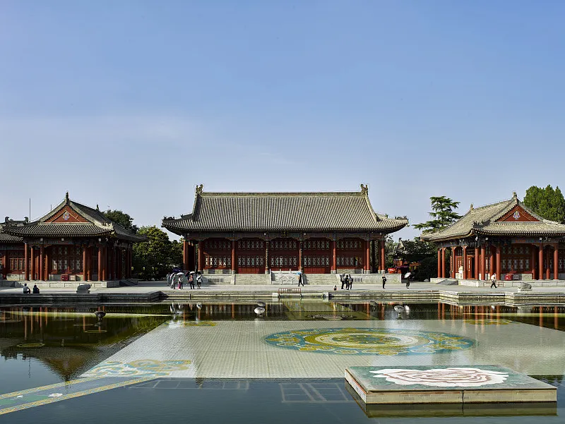

西安市，古称长安、镐京，陕西省辖地级市，是陕西省省会、副省级市、特大城市、 国家中心城市、西安都市圈以及关中平原城市群核心城市，国务院批复确定的中国西部地区重要的中心城市， 国家重要的科研、教育和工业基地。
大唐不夜城的中轴景观大道是一条约1500米横贯南北的中央雕塑景观步行街，其上分布着盛世帝王、历史人物、 英雄故事等九组主题群雕，立体展现大唐帝国在宗教、文学、艺术、科技等领域的地位并彰显大国气象。
西安钟楼是国内规模较大，保存完整的一座钟楼，始建于明洪武十七年（公元1384年），钟楼处于西安的中心地带， 是古城的地标之一，以它为中心辐射出东、南、西、北四条大街并分别与西安城墙东、南、西、北四门相接。
华清宫（华清池 • 骊山）景区位于西安城东30公里，与兵马俑相毗邻。因其亘古不变的温泉资源和众多历史事件享誉海内外，成为中国唐宫文化旅游标志性景区。
开放时间
09:30-22:30；(1月1日-12月31日)
开放时间
全天 (1月1日-12月31日 周一-周日)
开放时间
全年 08:30-17:00开放，清园时间18:00
开放时间
全年 07:30-18:00开放，清园时间：17:50
开放时间
09:00-17:30(全天)；停止入场时间:16:30
开放时间
08:30-17:00(全天)；停止入场时间:17:00